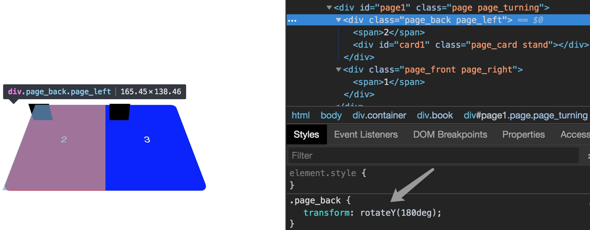
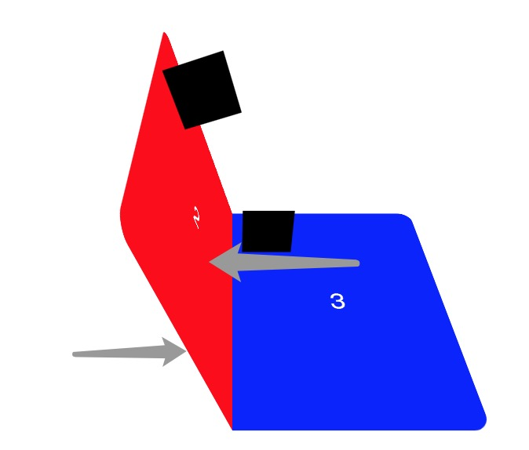
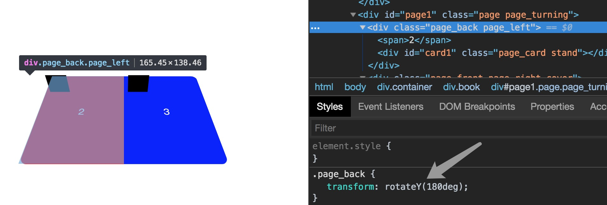
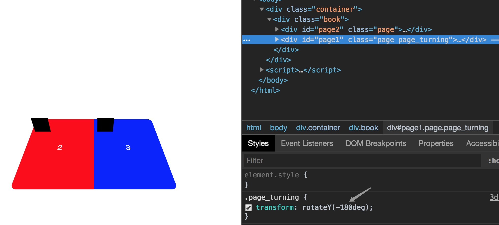
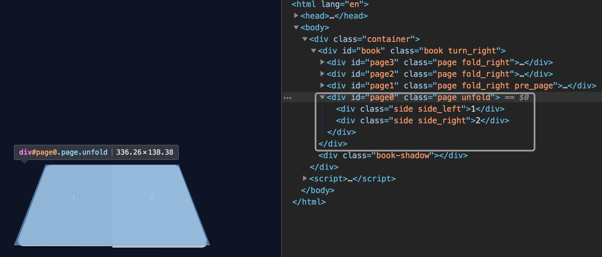
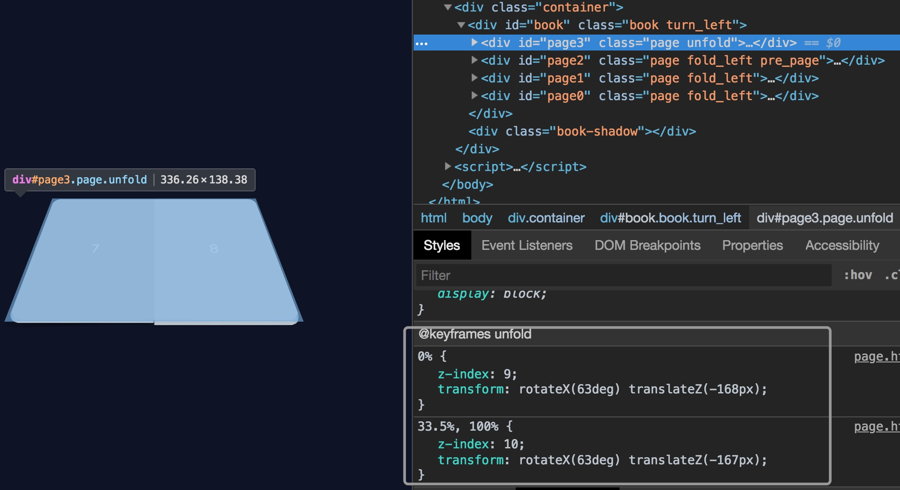
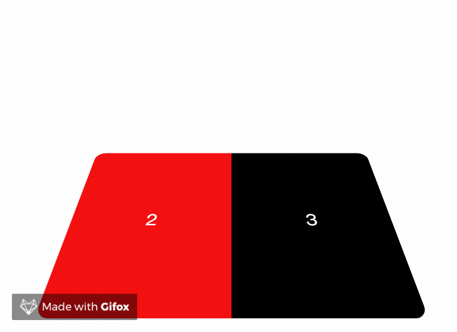
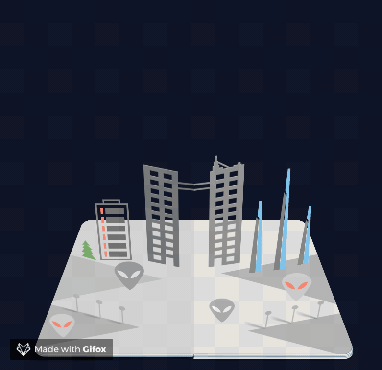

前言
上周看了京东以前的一个活动页面，看了一波代码，跟着做了个3d书效果的demo。趁热打铁，这周回顾记录下整个过程和思路，不然拖拖拖拖拖拖拖延症一犯，又不知道要到猴年马月了。
主要用到的css属性
transfrom-style
transform-style属性确定元素的子元素是否位于3D空间中，还是在该元素所在的平面内被扁平化(来自MDN)。只有设置了这个属性，对元素进行三维空间中的操作才会看到效果。并且要注意这个属性不会主动被子元素继承。
backface-visibility
属性指定当元素背面朝向观察者时是否可见。元素的背面总是透明的，当其朝向观察者时，显示正面的镜像(来自MDN)。因此在这个demo中要设置该属性让元素背面不见。
perspective
perspective 属性指定了观察者与z=0平面的距离，使具有三维位置变换的元素产生透视效果。z>0的三维元素比正常大，而z<0时则比正常小，大小程度由该属性的值决定(来自MDN)。可以类比绘画中的近大远小原理。
一个简单的翻页demo
结构
在这个demo中，以书的“物理”页（包括前后两面）为一个单位，每页由“正面”和“反面”两个div组成，“反面”自身需要绕y轴旋转180度。且在整本书中，为了不用再对层级关系做其它处理，div以书页顺序倒序放置。



翻页
翻页的时候就是将上文中说到的单位页以书轴为旋转轴逆时针旋转180度，转换为代码即改变transfrom-origin，然后rotateY(-180deg)。

多页demo
结构
这个demo中的结构与上一个demo中的结构有所不同。这里是以当前看到的左右两页为一个单位（考虑到之后的demo中可能会有左右两页之间的关联，因此这里换成左右两页为一个单位。但是完成最终的立体书后我觉得其实用上面一种结构应该也可以，左右两页之间并没有“真正”的关联）。

以页面的前后两面为一个单位时，上一个demo中翻页时只需要考虑自身页的翻转，不需要做层级控制，翻页的效果更接近于物理翻页效果。而在这个demo中，翻页时需要将打开页的层级提高的同时还要将关闭的那页层级降低，当前翻动的那页的正反两面由两个animation在控制，因此有一个比较明显的“断层”现象。


class
- 从“书”的层面划分的话，除了初始状态class（既没向左翻也没向右翻）以外，需要向左翻页和向右翻页两种不同的class，设置class为
turn_left和turn_right。 - 从“单位页”的层面划分的话，需要基本单位页、打开状态和“前一页”这三种class，打开页面时当前打开页和当前关闭页都要设置旋转效果和颜色过渡效果（做颜色过渡的效果是为了模拟书本在翻页过程当中书页的明暗变化，如果想进一步做到影子随书页翻动而移动的效果的话可以也可以模仿这个页面），设置class为
page、unfold、pre_page。 - 从“面”的层面划分的话，需要区分左半面和右半面，设置class为
side_left和side_right。
下面是向左翻动页面时涉及到的css代码，做了相应的注解，全部按照从大到小的层级书写，这样写样式时不容易遗漏。
1 | /* 页面打开时，整个页面的层级发生变化，向上移动一层 */ |
立体书
翻书的效果主体部分其实是上面讲的书体部分，书体部分完成之后，不过是在每个页面中加入不同的内容，在书页打开时内容效果速度小于书页打开速度。

1 | .ele { |